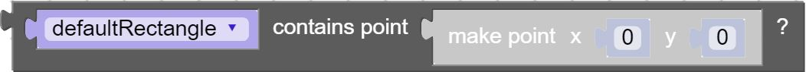
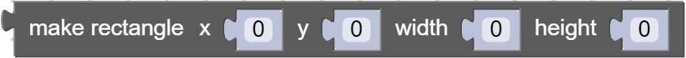
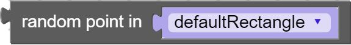
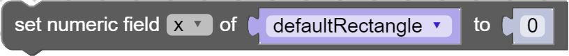
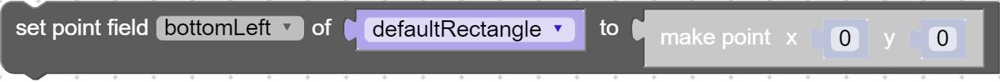

- Source:
Methods
-
<static> rectangle_clone(rectangle)
-
Returns a new rectangle with the same x, y, width, and height properties of the original. Check out Phaser documentation for a more in depth explanation.Parameters:
Name Type Description rectanglerectangle to clone
- Source:
Returns:
rectangle.clone() -
<static> rectangle_contains(rectangle, x, y)
-
Returns true/false if the rectangle contains the given coordinates. Check out Phaser documentation for a more in depth explanation.Parameters:
Name Type Description rectanglerectangle to check
xNumber x coordinate to check
yNumber y coordinate to check
- Source:
Returns:
Phaser.Rectangle.contains(rectangle, x, y) -
<static> rectangle_contains_point(rectangle, point)
-

Returns true/false if the rectangle contains the point. Check out Phaser documentation for a more in depth explanation.Parameters:
Name Type Description rectanglerectangle to check
pointpoint to check
- Source:
Returns:
Phaser.Rectangle.containsPoint(rectangle, point) -
<static> rectangle_contains_rect(rectangle_a, rectangle_b)
-
Returns true/false if one rectangle is fulling contained within another. Check out Phaser documentation for a more in depth explanation.Parameters:
Name Type Description rectangle_athe first rectangle to check
rectangle_bthe second rectangle to check
- Source:
Returns:
Phaser.Rectangle.containsRect(rectangle_a, rectangle_b) -
<static> rectangle_create(x, y, width, height)
-

Creates a rectangle with the given properties. Check out Phaser documentation for a more in depth explanation.Parameters:
Name Type Description xNumber x coordinate for the new rectangle
yNumber y coordinate for the new rectangle
widthNumber width of the rectangle
heightNumber height of the rectangle
- Source:
Returns:
new Phaser.Rectangle(x, y, width, height) -
<static> rectangle_get_numeric_field(object, field)
-
Returns the chosen numeric field value of the rectangle. Check out Phaser documentation for a more in depth explanation.Parameters:
Name Type Description objectobject to get values from
fieldthe field to get values of
- Source:
Returns:
object.field -
<static> rectangle_get_point_field(object, field)
-
Returns the chosen point field value of the rectangle. Check out Phaser documentation for a more in depth explanation.Parameters:
Name Type Description objectobject to get values from
fieldthe field to get values of
- Source:
Returns:
object.field -
<static> rectangle_intersects(rectA, rectB)
-
Returns true/false if the two rectangles intersect. Check out Phaser documentation for a more in depth explanation.Parameters:
Name Type Description rectAfirst rectangle to check
rectBsecond rectangle to check
- Source:
Returns:
Phaser.Rectangle.intersects(rectA, rectB) -
<static> rectangle_random(rectangle)
-

Returns a random x/y coordinate point from the rectangle. Check out Phaser documentation for a more in depth explanation.Parameters:
Name Type Description rectanglerectangle to get values from
- Source:
Returns:
rectangle.random() -
<static> rectangle_set_numeric_field(object, field, value)
-

Assign the chosen numeric field of the rectangle. Check out Phaser documentation for a more in depth explanation.Parameters:
Name Type Description objectobject to set the value for
fieldthe field to set
valueNumber value to set the field to
- Source:
Returns:
object.field = value; -
<static> rectangle_set_point_field(object, field, point)
-

Assign the chosen point field of the rectangle. Check out Phaser documentation for a more in depth explanation.Parameters:
Name Type Description objectobject to set the point for
fieldthe field to set
pointpoint to set the field to
- Source:
Returns:
object.field.copyFrom(point);